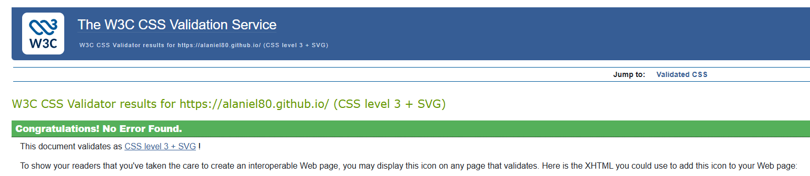

1. Create and use inline, internal and external CSS.
Use inline, internal and external CSS to format one or more elements of your web page. Consider including color, background-color, text-align, font-size, and font-family, as well as float, width, margin, padding, and / or border.
I used inline CSS to style my index pages, internal CSS to format the tables in Assignments 4 and 7, and external CSS to provide consistent styling across Assignments 1–10.
2. Use the W3C: CSS Validator to validate your external style sheet. Make any necessary corrections to pass the validation test.
